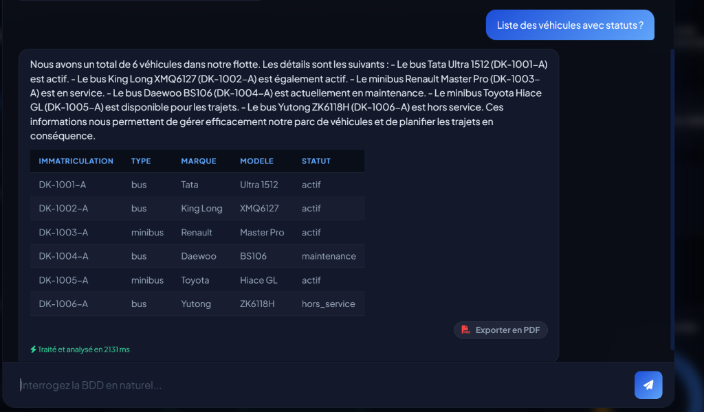
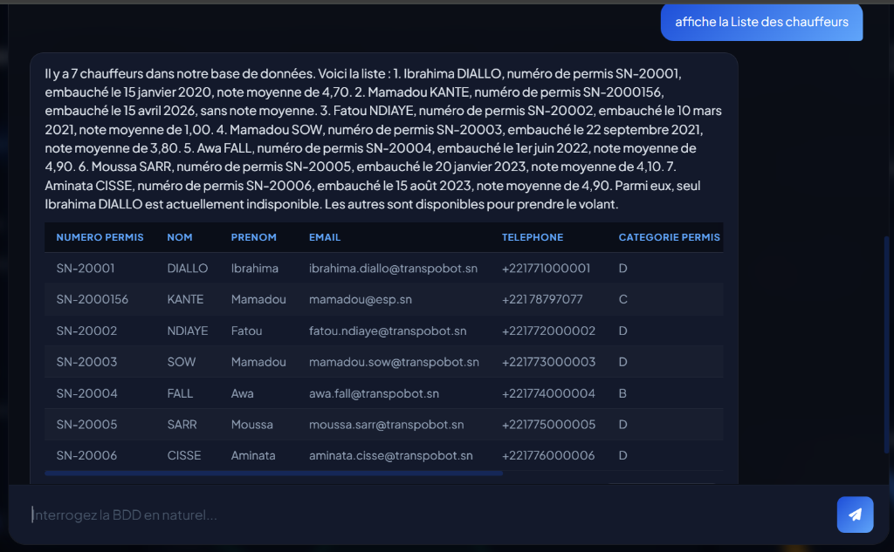
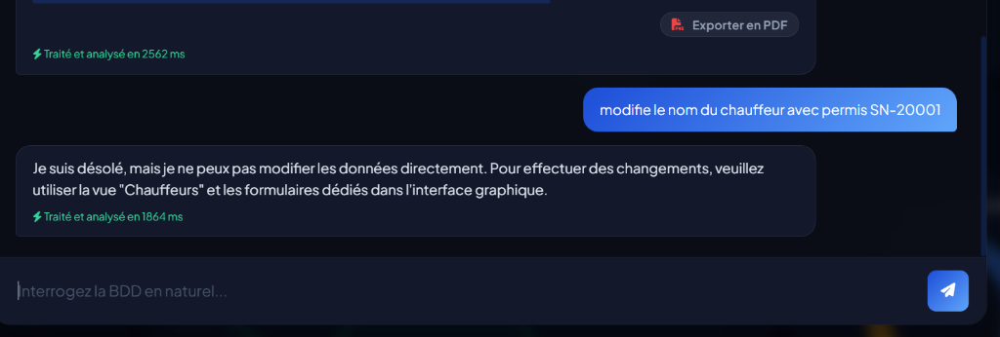
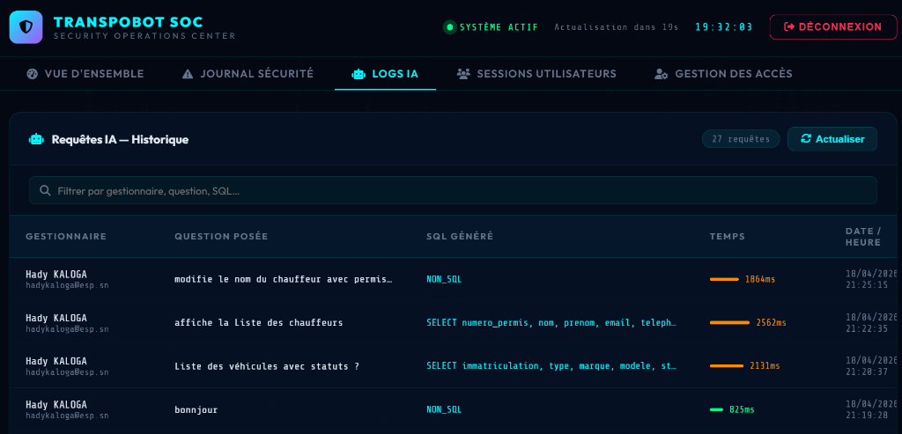
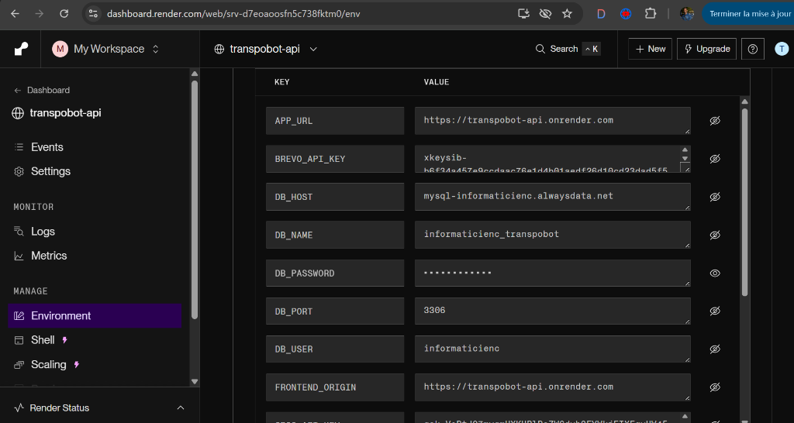
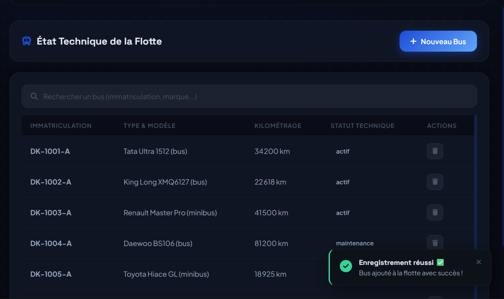
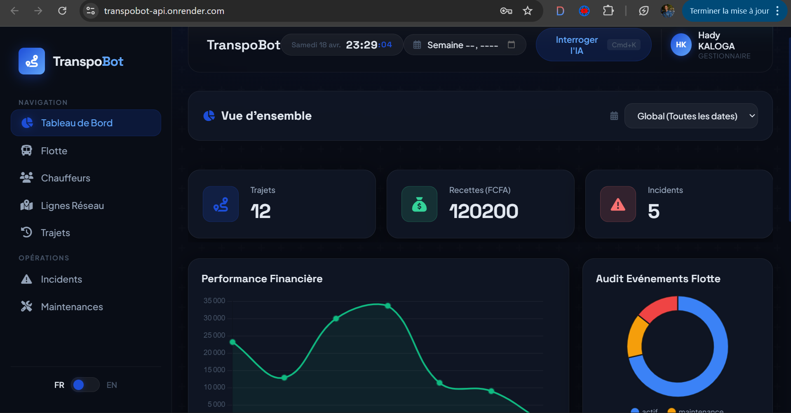
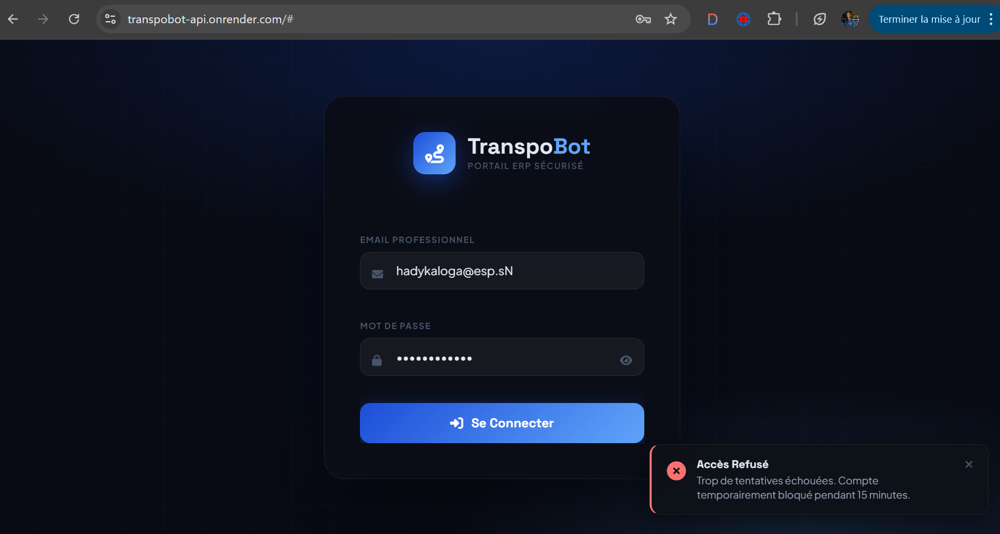
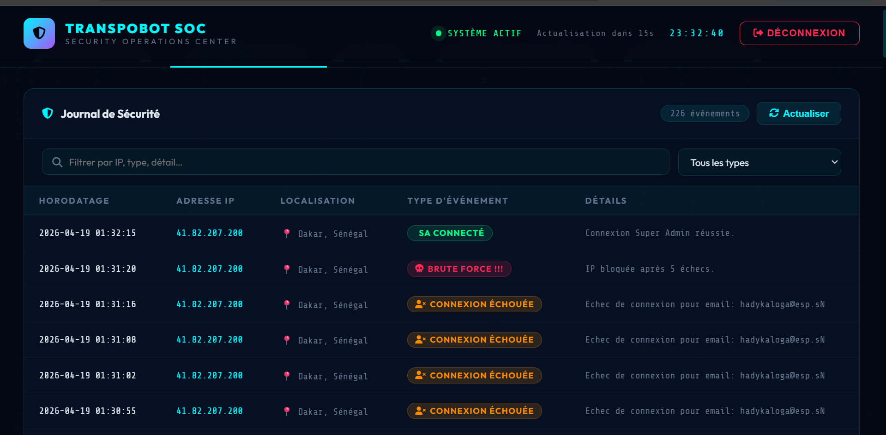

Dans le cadre du cours d'intégration de l'Intelligence Artificielle dans les Systèmes d'Information (Licence 3 GLSi — DIC1), nous avons conçu et réalisé TranspoBot, une application web complète de gestion de transport urbain intégrant un assistant conversationnel basé sur un Grand Modèle de Langage (LLM).
Le secteur du transport urbain génère d'importants volumes de données opérationnelles — gestion de flottes, trajets, chauffeurs, incidents — dont l'exploitation analytique reste souvent difficile d'accès pour les gestionnaires non techniciens. La compréhension de ces données nécessite généralement la maîtrise du langage SQL, ce qui représente une barrière technique significative.
TranspoBot répond à cette problématique en proposant une interface unifiée permettant de :
Gérer l'ensemble des opérations de transport via un tableau de bord interactif (CRUD complet) ;
Interroger la base de données en langage naturel grâce à un chatbot IA intégré, sans connaissances SQL préalables ;
Superviser l'ensemble du système via un portail d'administration dédié au SuperAdmin.
Le projet mobilise un ensemble cohérent de technologies modernes : Python/FastAPI pour le backend, MySQL 8.0 pour la persistance des données, Groq API (LLaMA-3.3-70b) pour l'intelligence artificielle, et HTML/CSS/JS Vanilla pour l'interface utilisateur. L'application est déployée en production sur Render (backend) et AlwaysData (base de données).
Ce rapport présente l'ensemble des travaux réalisés, de la modélisation de la base de données à l'ingénierie des prompts, en passant par l'architecture technique et la description des fonctionnalités développées.
I. Modélisation
La modélisation constitue le fondement de l'application TranspoBot. Elle garantit que les données métier — véhicules, chauffeurs, trajets, incidents — sont organisées de manière cohérente, intègre et exploitable aussi bien par les formulaires CRUD que par l'assistant IA.
I.1 Dictionnaire de données
La base de données informaticienc_transpobot comprend 13 tables SQL. Afin de synthétiser ce rapport et d'alléger la lecture, l'intégralité du dictionnaire des données (tous les attributs, types SQL et contraintes) a été déportée dans un document interactif dédié.
Le MCD représente le niveau conceptuel de la modélisation, selon la notation Merise. Il identifie les entités du domaine métier, leurs attributs et les associations qui les relient, indépendamment de toute considération d'implémentation technique.
Le modèle TranspoBot comporte 12 entités et 10 associations :
Note impression : Pour inclure le MCD dans le PDF, ouvrir mcd.html (lien ci-dessus) dans Chrome et utiliser Ctrl+P → Enregistrer en PDF, puis insérer la capture en annexe.
Un véhicule est attribué à 0 ou 1 chauffeur. Un chauffeur peut avoir conduit 0 ou N véhicules.
②
VÉHICULE — utilise — TRAJET
(0,N) : (1,1)
Un trajet utilise exactement 1 véhicule.
③
VÉHICULE — subit — MAINTENANCE
(0,N) : (1,1)
Une maintenance concerne exactement 1 véhicule.
④
CHAUFFEUR — effectue — TRAJET
(0,N) : (1,1)
Un trajet est effectué par exactement 1 chauffeur.
⑤
TRAJET — planifie — LIGNE
(1,1) : (1,N)
Un trajet appartient à exactement 1 ligne.
⑥
LIGNE — applique — TARIF
(1,N) : (1,1)
Une ligne définit 1 ou N tarifs (normal / étudiant / senior).
⑦
LIGNE — passe_par — ARRET
(1,N) : (0,N)
Association N:M → table ligne_arrets avec attributs ordre et temps_estime.
⑧
TRAJET — génère — INCIDENT
(0,N) : (1,1)
Un incident est lié à exactement 1 trajet.
⑨
LIGNE — définit — HORAIRE
(1,N) : (1,1)
Un horaire appartient à 1 ligne. Une ligne a 1 ou N horaires.
⑩
UTILISATEUR — génère — LOGS_REQUETES
(1,1) : (0,N)
Un log appartient à 1 utilisateur. Un utilisateur génère 0 ou N requêtes IA.
I.3 Modèle Logique de Données (MLD)
Le MLD traduit le MCD en un schéma relationnel exploitable par MySQL. Les clés étrangères remplacent les associations, et les tables d'association N:M deviennent des relations à part entière (ex: ligne_arrets). De plus, deux triggers MySQL (déclencheurs automatiques) gèrent le calcul automatique de la recette passagers pour éviter les erreurs humaines.
L'architecture de TranspoBot repose sur un ensemble de technologies sélectionnées pour leur complémentarité, leur performance et leur adéquation au contexte académique et opérationnel du projet.
Couche
Technologie
Justification
Frontend
HTML5 / CSS3 / JavaScript Vanilla
Choix de la légèreté face à React/Vue : pas de surcoût de compilation, déploiement immédiat. Charts.js pour les graphiques KPI, GSAP pour les animations, Alpine.js pour la réactivité légère.
Backend
Python 3.11 / FastAPI
Mode asynchrone (async/await) indispensable pour interroger MySQL et le LLM Groq simultanément sans blocage. Validation automatique des données via Pydantic. Écosystème IA Python le plus mature.
Base de données
MySQL 8.0
SGBD relationnel robuste, contraintes FK strictes, triggers natifs pour le calcul automatique des recettes. Hébergé sur AlwaysData (production).
IA / LLM
Groq API — LLaMA-3.3-70b-versatile
API gratuite à haute performance (inférence LPU). Modèle open-source de Meta, température 0.0 pour SQL (déterministe), 0.4 pour la réponse narrative. SDK Python groq utilisé directement.
Authentification
JWT (JSON Web Tokens) + bcrypt
Tokens signés HS256, expiration 8h, rôles admin/gestionnaire/lecteur. Mots de passe hashés bcrypt (facteur de coût 12). Portail SuperAdmin avec JWT distinct.
Déploiement
Render (backend) + AlwaysData (MySQL)
Render : déploiement automatique depuis GitHub (CI/CD), HTTPS managé, 750h gratuites/mois. AlwaysData : MySQL persistant, 100 Mo gratuits, connexion SSL depuis Render.
II.2 Schéma d'architecture globale
L'architecture de TranspoBot suit de manière stricte un modèle client-serveur moderne, propulsé par une surcouche d'Intelligence Artificielle en cloud.
Le Dashboard interagite avec une API FastAPI qui orchestre la communication entre la persistance des données sur MySQL et le pipeline cognitif sur l'API Groq (moteur d'inférence LLaMA-3).
Architecture REST : Toutes les routes API suivent la convention REST. Les routes CRUD sont protégées par JWT (rôle admin/gestionnaire). Les routes SuperAdmin utilisent un token JWT distinct avec rôle superadmin. La route IA (/api/ia/query) est accessible à tous les rôles authentifiés.
Sécurité de l'API
Mécanisme
Description
JWT HS256
Tokens signés avec secret partagé, expiration 8h. Validation sur chaque requête protégée.
bcrypt
Hachage des mots de passe avec facteur de coût 12. Jamais de mot de passe en clair en base.
RBAC
Contrôle d'accès basé sur les rôles : admin (accès total), gestionnaire (CRUD opérationnel), lecteur (lecture seule).
Anti-injection SQL
L'IA ne peut générer que des SELECT. Tout DELETE/UPDATE/INSERT est bloqué côté backend avant exécution.
Logs sécurité
Chaque événement (connexion, échec, blocage brute-force) est enregistré dans logs_securite.
CORS
Origines autorisées configurées via variable d'environnement ALLOWED_ORIGINS.
III. Description des Fonctionnalités Développées
TranspoBot dépasse les exigences du cahier des charges en proposant un système complet. Le tableau ci-dessous distingue les REQUISES fonctionnalités imposées du SUPPLÉMENTAIRES développements additionnels.
Catégorie
Fonctionnalité
Status
Gestion des données
Affichage liste des véhicules avec statut
REQUISE
Gestion des données
Affichage liste des chauffeurs
REQUISE
Gestion des données
Affichage des trajets récents
REQUISE
Gestion des données
Tableau de bord avec KPI
REQUISE
IA conversationnelle
Questions en langage naturel (FR/EN)
REQUISE
IA conversationnelle
Génération automatique SQL (Text-to-SQL)
REQUISE
IA conversationnelle
Résultats sous forme de tableau
REQUISE
IA conversationnelle
Sécurité SELECT uniquement (pas de modification)
REQUISE
Gestion données
CRUD complet véhicules, chauffeurs, trajets, lignes, tarifs, arrêts, horaires
SUPPLÉMENTAIRE
Opérations
Gestion des incidents et des maintenances
SUPPLÉMENTAIRE
IA
Réponse narrative bilingue (2ème appel LLM)
SUPPLÉMENTAIRE
IA
Journalisation des requêtes IA (logs_requetes)
SUPPLÉMENTAIRE
Sécurité
Authentification JWT + rôles RBAC + invitation par email
SUPPLÉMENTAIRE
Sécurité
Journal de sécurité (logs_securite) + blocage brute-force
SUPPLÉMENTAIRE
Administration
Portail SuperAdmin (5 onglets supervision)
SUPPLÉMENTAIRE
BDD
Triggers MySQL (calcul recette automatique)
SUPPLÉMENTAIRE
Déploiement
CI/CD automatique depuis GitHub (Render + AlwaysData)
SUPPLÉMENTAIRE
III.1 Fonctionnalités requises (Cahier des charges)
REQUISE Tableau de bord avec indicateurs clés (KPI)
La page d'accueil du Dashboard affiche en temps réel les indicateurs métier essentiels via des cartes KPI :
Nombre total de véhicules actifs / en panne / en maintenance ;
Nombre de trajets de la semaine (terminés, planifiés, en cours) ;
Taux de ponctualité (ratio trajets sans retard / total trajets terminés) ;
Recette hebdomadaire totale en FCFA ;
Graphiques Charts.js : répartition des incidents par type, évolution hebdomadaire des recettes.
REQUISE Affichage liste des véhicules avec statut
L'onglet Flotte affiche la liste complète des véhicules avec :
badge de statut coloré (vert = actif, rouge = en_panne, orange = maintenance, gris = hors_service),
filtres en temps réel par type et statut, et indication des alertes kilométriques.

Figure 3 — Assistant IA : Extraction de la liste des véhicules avec statuts
REQUISE Affichage liste des chauffeurs
L'onglet Chauffeurs présente l'ensemble du personnel roulant avec : nom, prénom, numéro de permis, catégorie, disponibilité (badge vert/rouge), note moyenne sur 5, et véhicule affecté.

Figure 4 — Assistant IA : Liste complète des chauffeurs et de leur disponibilité
REQUISE Affichage des trajets récents
L'onglet Trajets affiche les trajets récents avec : ligne, chauffeur, véhicule, date/heure départ, statut, nombre de passagers, recette et retard. Filtres par statut et par semaine.
III.2 Assistant IA conversationnel — Fonctionnalités requises
REQUISE Questions en langage naturel (français ou anglais)
L'assistant IA accepte des questions formulées librement en français ou en anglais. Le gestionnaire n'a besoin d'aucune connaissance SQL. La langue de la réponse s'adapte automatiquement à la langue détectée dans la question.
Exemples de questions acceptées :« Combien de trajets cette semaine ? » · « Quel chauffeur a le plus d'incidents ? » · « Show me all bus vehicles »
REQUISE Génération automatique SQL (Text-to-SQL)
Le pipeline Text-to-SQL fonctionne en deux étapes :
La question en langage naturel est envoyée au LLM LLaMA-3.3-70b (Groq, température 0.0) avec le schéma BDD complet injecté dans le prompt ;
Le LLM retourne une requête SQL SELECT pure, sans markdown, directement exécutable ;
Le backend valide que la requête commence par SELECT avant exécution sur MySQL.
REQUISE Résultats sous forme de tableau + sécurité SELECT
Les résultats JSON retournés par MySQL sont affichés dynamiquement sous le chat sous forme de tableau HTML généré en JavaScript. Les colonnes sont détectées automatiquement à partir des clés JSON.
Sécurité : le backend rejette toute requête ne commençant pas par SELECT. Le prompt interdit explicitement DELETE, UPDATE, INSERT, DROP. Le mot de passe (mot_de_passe_hash) est exclu de tout SELECT.

Figure 5 — Assistant IA conversationnel : Blocage sécuritaire d'une requête de modification (NON_SQL)
III.3 Fonctionnalités supplémentaires développées
Au-delà du cahier des charges, les fonctionnalités suivantes ont été développées pour produire un système complet et robuste :
SUPPLÉMENTAIRE CRUD complet — Gestion des données
Le cahier des charges exigeait uniquement l'affichage des données. Nous avons implémenté un CRUD complet (Create, Read, Update, Delete) pour toutes les entités :
Véhicules : ajout, modification du statut/kilométrage, suppression avec vérification de dépendances ;
Chauffeurs : ajout, affectation de véhicule, modification de disponibilité ;
Trajets : planification, cycle de vie complet (planifié → en_cours → terminé / annulé), calcul automatique de recette via trigger ;
Lignes, arrêts, horaires, tarifs : gestion complète du réseau de transport.
SUPPLÉMENTAIRE Gestion des incidents et maintenances
Incidents : signalement avec type, gravité, coût de réparation, résolution. Passage automatique du véhicule en statut en_panne ;
Maintenances : planification préventive/corrective avec suivi technicien et coût en FCFA.
SUPPLÉMENTAIRE Authentification sécurisée par invitation
Système d'invitation en 3 étapes : le SuperAdmin crée le compte → un email avec lien d'activation (token valide 48h) est envoyé → l'utilisateur choisit son mot de passe. Connexion via JWT HS256, expiration 8h, rôles RBAC (admin/gestionnaire/lecteur).
SUPPLÉMENTAIRE Journal de sécurité & Protection brute-force
Chaque événement de sécurité (connexion réussie, échec, tentative brute-force, blocage) est enregistré dans logs_securite avec l'IP source et la géolocalisation estimée. Blocage automatique après N tentatives échouées.
SUPPLÉMENTAIRE Portail SuperAdmin (5 onglets)
Interface d'administration isolée à /superadmin.html, accessible uniquement avec des identifiants SuperAdmin chargés depuis les variables d'environnement (non stockés en base). Offre 5 onglets : Vue d'ensemble · Journal Sécurité · Logs IA · Sessions actives · Gestion des comptes.
Au-delà du simple tableau de données requis, un second appel LLM (température 0.4) génère une réponse analytique naturelle comme un vrai analyste. L'utilisateur reçoit donc : une réponse textuelle fluide et le tableau de données.
SUPPLÉMENTAIRE Déploiement CI/CD automatique
Intégration GitHub → Render avec déploiement automatique à chaque git push sur main. HTTPS manag, 0 configuration serveur manuelle. Base de données MySQL hébergée sur AlwaysData avec connexion SSL depuis Render.
Le Prompt Engineering est le cœur décisionnel de l'application quant à l'assistance intelligente. Pour éviter les hallucinations du modèle et garantir la sécurité du système d'information, la génération a été scindée en deux appels LLM distincts (LLaMA-3.3-70b).
L'objectif exclusif de ce premier appel est de générer une requête SQL valide ou de rejeter formellement la demande de l'utilisateur si elle implique une mutation des données.
Injection du DDL Complet : Le prompt intègre la définition absolue des 13 tables (clés étrangères, énumérations, et cas problématiques), coupant court à toute pure invention d'attribut de la part du modèle.
Règles de sécurité de type "Kill Switch" : Seules les sélections (SELECT) sont autorisées. Toute intention de modification de données (ex. "Supprime cette ligne") ordonne au LLM de retourner la chaîne clé NON_SQL, ce qui interrompt immédiatement le pipeline logiciel.
Prompting Few-Shot : 6 exemples typiques modélisant les requêtes temporelles ou complexes (jointures, calculs) orientent fermement le modèle vers des patterns validés.
Immédiatement après le retour des résultats tabulaires JSON par MySQL, un second processus LLM produit la voix du chatbot.
Rôle d'Analyste Métier : Le prompt impose à l'IA d'effacer tous les détails techniques (acronymes de la BDD, formats JSON bruts) pour s'adresser au profil administratif/manager.
Adaptation Bilingue Contextuelle : La production de la synthèse ajuste automatiquement sa syntaxe dans la langue organique sollicitée par l'expression même du gestionnaire.
V. Exemples de requêtes SQL générées
Pour des raisons de sécurité métier et d'ergonomie, les requêtes SQL brutes générées par l'intelligence artificielle ne sont pas visibles par le gestionnaire. L'utilisateur administratif n'interagit qu'en langage naturel et ne reçoit que les résultats.
Cependant, le contrôle des commandes SQL produites via le LLM est strictement réservé au portail SuperAdmin via la console globale d'audit.
Trace architecturale et supervision (SuperAdmin)
Le journal dédié "Logs IA" du panneau SuperAdmin consigne l'intégralité du trafic cognitif : l'utilisateur, la question d'origine, le temps de réponse du modèle LLaMA, et la requête SQL exacte générée. Si la sécurité a prévalu sur une intention malveillante (Update/Delete), la mention NON_SQL est logguée.

Figure 6 — Vue SuperAdmin : Journalisation absolue des requêtes IA pour le contrôle qualité et la sécurité
VI. Déploiement et Mise en Production
Le système TranspoBot a été déployé dans une véritable infrastructure Cloud adaptée aux contraintes réelles de production. Cette approche a nécessité de coordonner trois plateformes majeures : GitHub, Render et AlwaysData.
Figure 7 — Squelette simplifié de l'architecture CI/CD du déploiement
VI.1 Intégration Continue (CI/CD) et Infrastructure as Code
Le projet adopte le principe de l'Infrastructure as Code avec le fichier render.yaml, situé à la racine du dépôt. Celui-ci indique à Render l'environnement d'exécution exact à provisionner. Voici l'extrait fondamental qui automatise le déploiement à froid :
Le backend FastAPI sert non seulement les requêtes API (/api/*), mais utilise également le module StaticFiles pour servir nativement le code HTML/CSS/JS du frontend. Cette manœuvre technique fusionne le client et le serveur sous la même origine web (https://transpobot-api.onrender.com).
À chaque git push main sur le référentiel GitHub, un hook web prévient Render qui déclenche automatiquement le build et redéploie le système de manière transparente (CI/CD).
VI.2 Initialisation de la Base de Données & Sécurisation absolue
La persistance des données est isolée sur un serveur AlwaysData hébergeant une base MySQL 8. L'architecture a été amorcée via l'importation directe de notre fichier souche robuste init_alwaysdata.sql dans le client phpMyAdmin de production. Cela a garanti la création des 13 tables relationnelles de manière idempotente ainsi que l'ancrage des triggers métiers (calcul des recettes automatiques).
Sécurité des variables et secrets : Dans un registre de sécurité professionnelle, aucune donnée sensible n'est écrite en clair. Le fichier de configuration .env est neutralisé par Git. Cependant, l'application dépend de composants externes vitaux, dont on injecte les clés directement à chaud sur Render :
JWT_SECRET : La signature cryptographique protégeant les jetons de connexion
GROQ_API_KEY : Liaison API sécurisée au modèle d'Intelligence Artificielle LLaMA-3
BREVO_API_KEY : Relais pour les services d'envoi de mails transactionnels

Figure 8 — Render : Tableau de bord de l'injection en direct et sécurisée des informations d'identification
VI.3 Stratégie de Maintien "Keep-Alive" (CRON)
Les serveurs académiques (gratuits) de Render imposent le "spin-down" : le conteneur s'éteint totalement au bout de 15 minutes d'inactivité. Relancer TranspoBot infligeait jusqu'à 50 secondes d'attente lors du "Cold Start" (démarrage à froid), ruinant l'expérience utilisateur.
La solution a été d'utiliser l'interface de programmation des Tâches Planifiées d'AlwaysData. Un script s'exécute automatiquement en tâche de fond toutes les 11 minutes sur leurs serveurs d'administration :
curl -A "Mozilla/5.0 (Windows NT 10.0; Win64; x64) AppleWebKit/537.36" https://transpobot-api.onrender.com
Cet appel artificiel, se faisant passer pour un navigateur classique via le User-Agent, valide le trafic auprès de Render, simulant qu'un agent utilise constamment TranspoBot. La latence de l'API est donc perpétuellement abaissée à 0 seconde de refroidissement (disponibilité 24/7).
VII. Validation et Scénarios de Test
Afin de garantir la fiabilité du système en production (Zero Downtime) et l'intégrité de la logique métier, plusieurs campagnes de tests ont été menées couvrant l'interface graphique (frontend), les routes d'API, et la sécurité des accès.
VII.1 Tests Fonctionnels (CRUD & Métier)
Nous avons validé de bout en bout le processus métier principal : l'ajout d'une nouvelle entité (véhicule ou trajet) et sa répercussion immédiate sur les indicateurs de performance (KPI) du tableau de bord.

Figure 9 — Test de bout en bout : Notification de succès (Toast) lors d'une opération d'écriture en BDD

Figure 10 — Test d'intégration : Actualisation instantanée des KPI de gestion sur le Dashboard
VII.2 Tests de Robustesse & Cybersécurité
Les vulnérabilités classiques (Brute Force, Cross-Site Scripting, accès hors privilèges) ont fait l'objet de tests red-team. Nous illustrons ici le bouclier anti-Brute Force bloquant un attaquant tentant de forcer l'accès d'un compte agent.


Figure 11 — Test de robustesse : Déclenchement du blocage IP (à gauche) et alerte dans le journal SOC SuperAdmin (à droite)
VIII. Conclusion Générale et Perspectives
Le projet TranspoBot a atteint et dépassé l'ensemble des objectifs fixés par le cahier des charges. En partant d'un besoin réel du secteur du transport urbain — l'exploitation accessible de données opérationnelles complexes — nous avons conçu et livré une application web complète, déployée en production et opérationnelle.
Bilan des réalisations
Sur le plan technique, le projet a permis de maîtriser et d'intégrer un ensemble cohérent de technologies de pointe :
Modélisation relationnelle rigoureuse : 13 tables MySQL, 10 associations Merise, 2 triggers automatiques pour le calcul des recettes, et un script d'initialisation idempotent (init_alwaysdata.sql) ;
Backend REST sécurisé : API FastAPI avec validation Pydantic, machine à états métier stricte pour les trajets, règles anti-double-booking, protection brute-force JWT et journal d'audit complet ;
Interface utilisateur moderne : Dashboard SPA responsive avec graphiques temps réel (Charts.js), portail SuperAdmin à 5 onglets, et flux d'invitation par email ;
Intégration IA opérationnelle : Pipeline Text-to-SQL en deux appels LLM (LLaMA-3.3-70b via Groq), réponse bilingue, sécurité SELECT-only, journalisation des requêtes IA ;
Déploiement Cloud professionnel : CI/CD automatique GitHub → Render, base MySQL sur AlwaysData, stratégie Keep-Alive, gestion des secrets via variables d'environnement.
Valeur ajoutée et enseignements
Ce projet illustre concrètement comment l'Intelligence Artificielle — et plus précisément le paradigme Text-to-SQL — peut démocratiser l'accès à l'analyse de données pour des utilisateurs non techniciens. Plutôt que de former les gestionnaires au SQL, TranspoBot leur permet de poser leurs questions en français ou en anglais et d'obtenir instantanément des réponses analytiques précises.
L'expérience a également mis en évidence l'importance critique du Prompt Engineering : la qualité du schéma injecté dans le contexte LLM et la précision des règles métier définies dans le prompt système sont le facteur déterminant de la fiabilité des requêtes générées. Une ambiguïté dans le schéma se traduit directement par des hallucinations de colonnes inexistantes.
Difficultés rencontrées et solutions apportées
Le développement d'une architecture full-stack intégrant de l'IA a naturellement posé plusieurs défis techniques majeurs, que nous avons su surmonter :
Hallucinations SQL du LLM : Le modèle LLaMA-3 avait initialement tendance à inventer des noms de colonnes ou à générer des requêtes UPDATE. Solution : Injection du schéma SQL millimétré dans le prompt système, passage à une température de 0.0, et forçage logiciel du préfixe SELECT côté backend.
Cold Start de l'API (Latence) : Le déploiement sur les instances gratuites de Render entraînait un "spin-down" (mise en veille) et des démarrages de plus de 45 secondes. Solution : Mise en place d'un script "Keep-Alive" exécuté toutes les 11 minutes via le Cron d'AlwaysData pour maintenir l'API éveillée 24/7.
Asynchronisme et cohérence des ENUMs : Des rejets SQL se produisaient en raison de légères différences de typage entre le front, Pydantic et MySQL (ex: panne vs en_panne). Solution : Audit complet de la base, standardisation des ENUMs et ajout de validateurs Literal[] stricts dans les modèles Pydantic.
Superposition UI (Conflits CSS) : Le module "Spotlight" de l'IA (chatbot) interceptait involontairement les clics destinés au tableau de bord sous-jacent. Solution : Refonte de la logique des couches avec des classes d'isolation et la propriété CSS pointer-events: none dynamique.
Perspectives d'évolution
Plusieurs axes d'amélioration ont été identifiés pour de futures versions du système :
Mémoire conversationnelle : Implémenter un historique de contexte sur plusieurs tours pour permettre des questions de suivi (« et pour la semaine dernière ? ») ;
Application mobile : Développer une application React Native permettant aux chauffeurs de gérer leur statut et de signaler des incidents depuis le terrain ;
Géolocalisation temps réel : Intégrer un flux WebSocket pour afficher la position des véhicules en cours de trajet sur une carte interactive (Leaflet.js) ;
Analyse prédictive : Exploiter l'historique des incidents et des kilométrages pour prédire les besoins de maintenance préventive par apprentissage automatique ;
Fine-tuning du modèle : Entraîner un modèle spécialisé sur les requêtes SQL métier TranspoBot pour réduire la latence et améliorer la précision sur les cas complexes.